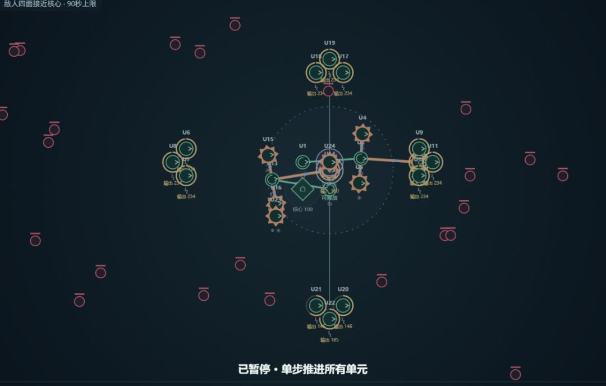
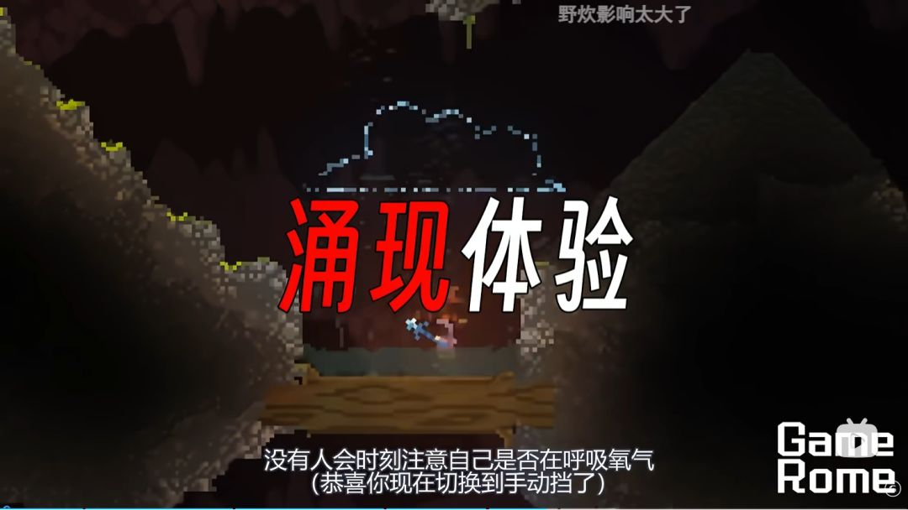
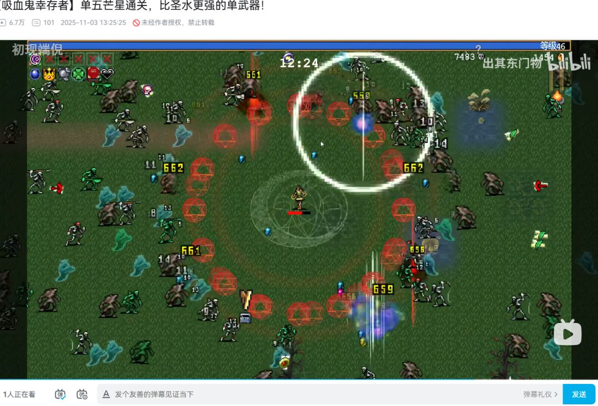
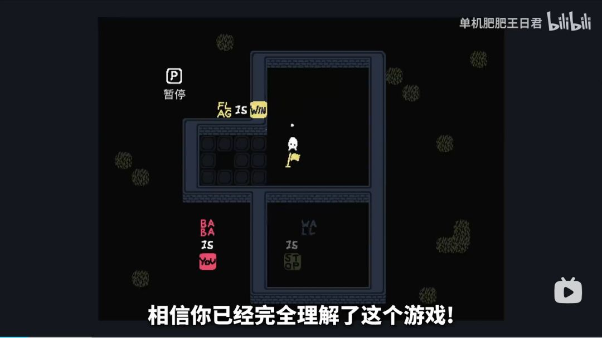
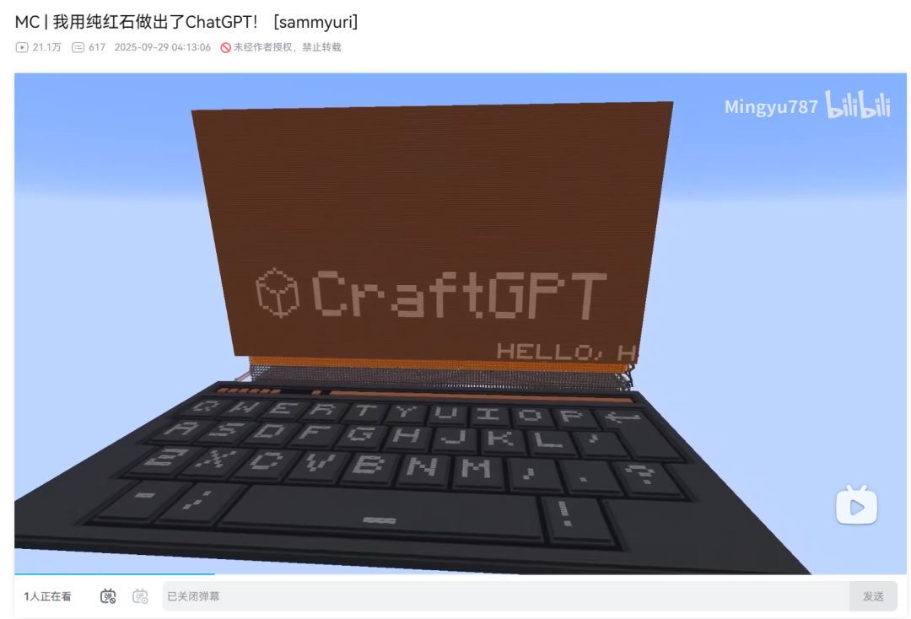
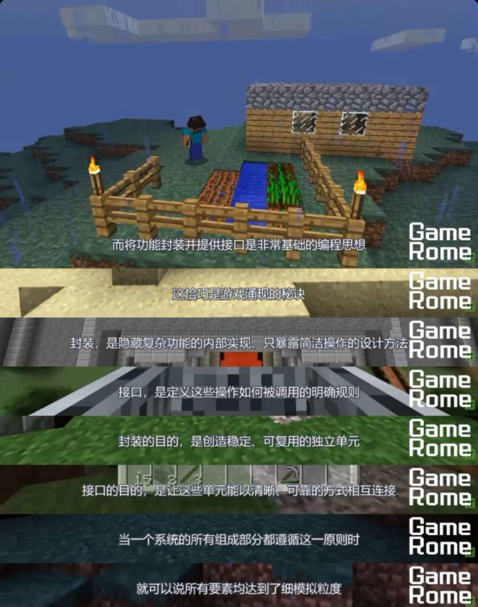

发现，心流和尤里卡——涌现的本质
原文链接：https://www.taptap.cn/moment/857055864815616889
没有哪个设计能比涌现更能体现在这个时代策划需要的素质了
0.前情提要
由于经历了一些波折，在文字解密、肉鸽塔防等多种尝试后，这两天终于明确了我们的主题。但是既然讨论了这么久，那确实是有一些自己觉得非常有趣的东西在锐意生产中，敬请期待后面的开发日志……！

塔防构想的组件demo
那么第一篇说什么呢，我们想分享一些前面七天的一些关于涌现及其设计的看法，以及一些我们设计的心得。
在第一天看到“涌现”这个题目的时候，我们无疑沉默了，然后很快找到了来自小破站的一位老师关于涌现的视频（拥有涌现系统的游戏一定带来涌现体验吗？【游戏罗马】 直到前天我去看的时候，还有7个人在观看），慢慢对涌现和可能产生的作品进行了一些分析。

B站博主sky_walker视频截图
1. 涌现式体验
如果做一个大的分类，一类是物理的涌现，比如实体事物和虚拟事物的产生（比如言语、规则），而另一类是心灵体验的涌现，玩家在游玩过程中发现、创造、实现了一些东西，然后心灵上达成了涌现的体验——原来还能这样？！

实体：海量怪物涌现（BV1X61hBxEh9）
讲到这里，我们要久违地进行一个扣题了，可以发现，心灵的涌现必然来自于发现，这种发现来自于设计师的巧妙构思，不同的导入、切换和展开给人的体验完全不同。
如果存在一些东西，玩家在发现设计师带给他的东西或设计师试图通过什么带给他一些东西时，都会收获一种强烈的惊喜时，那么我们就可以说这种设计和这种交互给玩家带来了涌现。

BABA IS YOU中，通过语法修改了胜利条件（BV1WCQKYbEKB）
当这种东西是场景或世界里已经存在的东西，而实际上产生它是如此简单时，“发现”带来的感受是更深刻的，它加深了玩家对发现的印象，也更进一步地认识到了作者与世界规则的智慧。
说到这里，想到了曾经爆火的《找你妹》游戏和小时候玩过一种书，如下，与这种发现是多么相似
一种儿童游戏书，在画面里利用已有元素隐藏无关的物品，制造大脑和视觉的盲区
涌现体验的来源已经阐明，而涌现体验的结果，即那个发现新东西、已有但未知的东西带来的感受，在我们看来也可以被称为“aha时刻”或“尤里卡时刻”，这是一种顿悟的惊喜，一种发现了过去从未有过的事物的触动，一种灵感突然降临大脑的前所未有的美妙。
在讨论这个问题的时候，我不禁想到，人工智能生成模型是否产生了智慧呢？
人工智能生成内容的过程是否是一种涌现呢？如果有人说概率选择和输出只是一种底层模式的揭露，那么我们怎么敢定义人类的智慧不是在神经元的一次次计算和概率输出中组成的呢？
我不知道当我看到AI为我生成的500个答案中出现了一个我感到天才的想法的时候，AI是否也开始加大对这个想法的输出概率，然后用最冷静理智的语言向你极力推荐它；
我只知道，我的心会在那种时候经历一种强烈的——原来还可以这样。
涌现体验是一种玩家在游玩中产生的体验，如何设计出这种体验，就是我们对这次题目的解释。（似乎这种话应该在第一天或者第二天说hhh）
2. 涌现式设计
而在创造这种体验的基础上，更进一步的，是涌现式设计这一创作工具。涌现式设计想要的，是一种能够自动化生成涌现式体验的工具，这种工具认为心灵的涌现由物理的涌现导致，在游玩的过程中自然地产生。
由于设计师不能无限地制作游戏，因此设计师将制作的权力让渡给了玩家，无数的玩家可以在游玩的过程中创作新的事物，实现物理的涌现。在这个过程中，玩家的认知从简单系统突然转移到自身创作的复杂系统，于是玩家感受到了“原来还可以这样”的涌现式体验。

《我的世界》红石系统制作ChatGPT（BV1X7HFz4EwE）
这种设计对系统的底层存在巨大的考验，比如有人认为涌现系统应该能够产生无限的结果，因此这个系统必然是能够自然产生无限可能的系统。
那么这时候就不得不问，创意工坊算不算一种涌现式设计呢，这也是将少数创作的积木交给了玩家进行拼接。我想是的，我们已经阐述了，涌现式设计是玩家借助作者提供的元素与规则，创造出超出这些元素原始用途的交互和体验，而创意工坊也是这样一个过程，玩家在创意工坊中承担了关卡策划的工作。
B站博主青默ya的主页，平台与尖刺上诞生了无数经典有趣的作品
一个完善的创意工坊面临的考验就是创造涌现式设计的考验，作者需要先为自己的游戏创造一个良好的基础，明确系统的边界，创造出严密自洽的世界的规范和创作规范，才能让玩家在创意工坊里进行无限的创造。
用元素多少的绝对性来评价系统是否是涌现的是并不可靠的。我们会惊叹于红石系统或生命游戏那样的简洁而优雅，但也不能否认I Wanna中迸发了无数作者和玩家的心血与尖叫。涌现是否出现（我们假定涌现应该是由程度高低判定是否出现的，像一个激活函数），还应该看其可以创作出的东西的复杂度与原始物体的对比，创作结果的复杂度是否与其带来的新体验程度想付出，而非仅凭原始物体的多少就可以判定。
比如《逃离鸭科夫》，衍生出井喷式的Mod，大幅增加了游戏的可玩性与对玩家的吸引力，除了玩家们的热爱，也离不开制作人Jeff对射击品类的经验积累和高超设计技巧，有了稳定的基建，才能造出优雅的房子。
逃离鸭科夫的创意工坊界面
于是我们可以顺理成章地引入下面的话题——策划过程是涌现的，策划是一个借助自然界的一切可能尝试涌现的过程。
3.策划过程的涌现
前面说完了结果（涌现式体验）、一种抵达结果的工具（涌现式设计），接下来讨论我们对工具的创作过程。或许这个部分是很符合“开发日志”这个题目要求的
对我们来说，涌现的设计方式是解构和重构，如果能够找到无数个系统的共通点，那么我们就有理由相信这些系统是由某些更底层的东西组成的，最终，发现这些东西的过程像一个数学过程。
正如力的系统创造出了运动，而人类在运动之上构建了体育，通过体育发掘和展示人类的极限；康威的生命游戏并不是创造了不存在的东西，而是通过人类的智慧发现了一种存在的规律。（不必纠结这些东西是否是充要条件，只是想用一种带点诗意的语言阐述我的灵感）
一种关于世界本质的观点（BV1Maf6YnEeV）
我们希望玩家的游玩过程是涌现的，因此我们要寻找系统背后的潜藏的规律，而更有趣的是我们在设计游戏的过程中也深刻地感受到了涌现。对玩家来说，涌现的体验是“发现”这一行为带来的，而对设计师来说，涌现的体验是在绞尽脑汁让玩家自然而然地发现中得来的，即设计如何设计一个能够带来涌现的交互。正如在不经意间游玩自己的demo或者听取他人意见的时候，心中会突然想到“原来这也能放进游戏”。
主策说自己是从咒术回战里想到的很多东西，咒术回战你到底看了有多远
图：没有设计过的路人也能进行游戏创作
前面已经提到，涌现的设计方式是解构和重构，我们对一切物体进行解构，得到一些组合，然后模拟玩家的视角去进行重构，才能分析玩家是否能够在这个过程中得到乐趣。
最终我们发现，解构是不宜到达最底层的部分的，且不论这短短的二十天我们能否做到，完全解构就像把计算机拆分成0和1，由玩家自行去寻找制造电脑的方案，可扩展性极强，而趣味性过于小众。
所以我们产生了封装，将提取出来的底层机制进行组合，减少玩家的游戏负担和难度，期待在玩家能够体验我们游戏的宝贵时间里，能够感受到优秀的反馈，产生强烈的胜任感和参与感（来自SDT三要素）。这种封装也对应了程序里的抽象、组合、继承、封装。

封装的解释，来自B站博主sky_walker视频
玩家不可能每一秒都获得尤里卡时刻。如果寻找发现的过程一直迷茫、枯燥或者受挫，那么再精彩的可能性，也未必会被他们发现。我们通过封装，让玩家能够通过简单的形式进行创造，获得涌现式的体验，并期待下一次抓住这样的时刻，而系统也回应了玩家的期待，让玩家自发地、恰好地得到了下一次刺激。
有人认为，涌现是难以定义和讨论的，制作涌现式游戏是一种冒险的行为（某乎：译文-如何打造涌现式玩法系统）。在这七天的进展中，我切实地感受到了涌现式游戏制作的困难之处，对我们来说，太过放纵或太过拘谨都不是我们想要的，过于放纵会对玩家（和我们）提出过高要求，我们不希望做成某种模拟器（如果一定要做，那对程序来说，最简单且涌现的东西应该是封装一份编程语言）。
太放纵的东西并不一定是合格的游戏，在这个注意力稀缺的年代（Attention is all you lack!），我们希望在满足涌现的定义的同时，做出触发玩家的心流的游戏，做出激发玩家最纯真乐趣的游戏，做出激起玩家探索与和思考欲的游戏。
或许自然界才是最给人涌现的载体吧，我们的世界是简洁的（来自我的物理老师）。
我们知道色彩、光影、技法等创造了美，但是我们不能将这几样东西交给玩家，尽管我们知道不同人对同样事物的看法不尽相同，极致的艺术家和极致的美术白痴必然存在，但是我们不能放任玩家之间的方差无限扩大。
（BV1Maf6YnEeV）
主策：在老祖宗发明语言交流前，他们就是这样不断地去靠五感发现认知这个世界，再将他们思考联系起来，所以涌现这个能力是一直伴随着人类的血脉的。人一生都在适应和改造世界
结尾碎碎念
经过上面的讨论，我也会想，是否真的存在涌现与未知呢
对于设计师而言，我们所想的东西，其实只是发现了一项本来就存在的东西；
对于玩家而言，他们感到惊奇的时刻、发现未知的时刻，或多或少都被设计师掌控着（这也是我们最终认为肉鸽的涌现不符合我们期待的理由），无限和从无限中获得的体验也是一种可预知的选项。
相信探索是永远存在的（BV1Maf6YnEeV）
我们不能保证做出来的是一个百分百涌现的系统，玩家如果有足够长的时间，或许能够穷举游戏的所有可能性，
因此对于我们的扣题，更准确地应该是实现涌现式体验的和不断接近涌现式设计（我们相信我们的设计过程是涌现的，但是我们没有过多让渡给玩家）。
即使如此，我们对于涌现的定义不应该太宽泛——比如对于一种情感体验强制说成是涌现的，因为产生了玩家心中上一时刻不存在的东西——否则就像写一篇水文一样，将A+B+C然后进行包装，然后对一些词进行本不需要的替换，以使得自己的内容看起来像那么回事。
水论文be like（xhs:95455223338）
或许这次gamejam就是主办方想要发起的一次“关于涌现的大讨论”吧，我甚至在猜测涌现的程度是否会是主办方评价作品的标准，不是是否有某个角度切合了涌现（比如大批的子弹从塔中涌现出来了），而是玩家视角的涌现的体验。
希望我们能够在抵达终点的日子，交上一份能够参与讨论的答卷。
为我的零碎和发散而道歉，但是这是我第一次完整地发表自己关于“设计”的观点，因此这个过程是有些激动和陌生的。
我是个发散而又追求些许严谨的人，而写东西的时候已经感觉到甚至无法用起承转合的连接词来连接我的句子了，这让我感受到逻辑的欠缺……所以让AI帮我修改了一些逻辑问题，但是都是我逐字敲出来的^(*￣(oo)￣)^
最后，贴一段主策的发言，让我感受到心潮澎湃。
或许也是被AI浸润了太久，我们的大脑或多或少有些生锈，
而当我们还有动力去认真思考何种东西是自身独有的，这或许是人类的光辉在闪烁
（猜猜说了多少个或许）